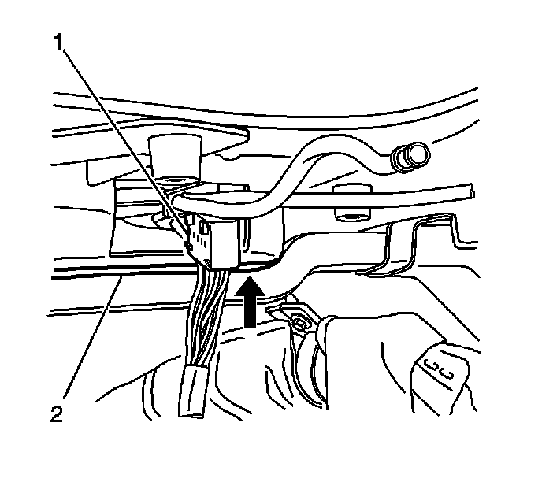
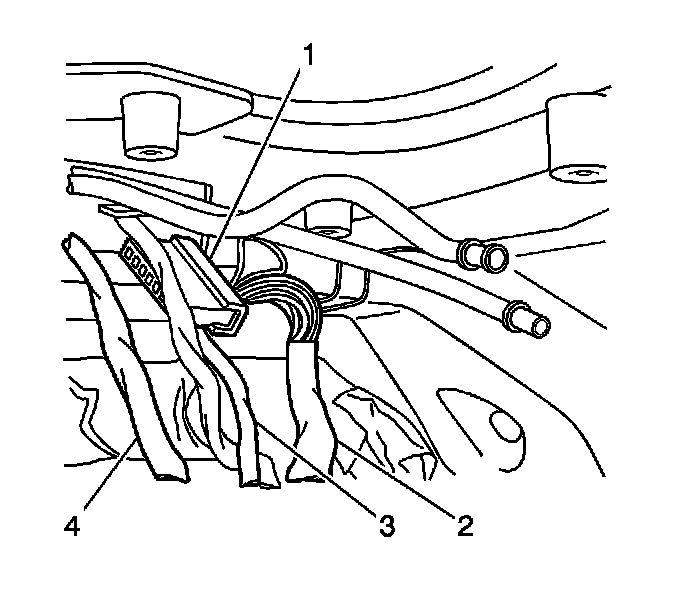
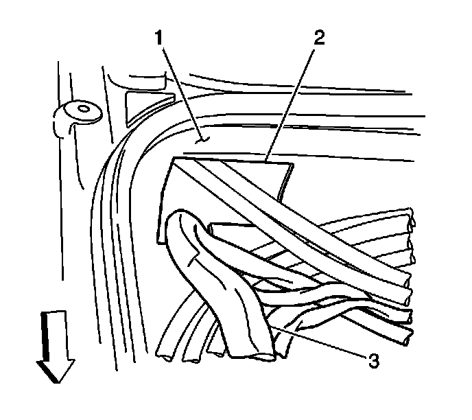
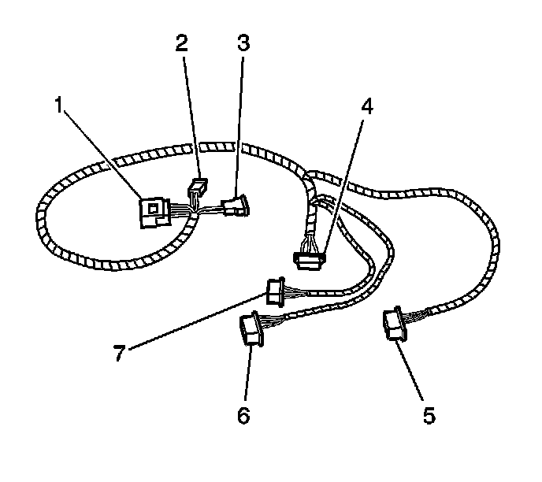

Sunroof Wiring Harness Replacement
Sunroof Wiring Harness Replacement
Removal Procedure
1. It is only necessary to lower the headliner. Only do those step in headliner replacement that will lower the headliner enough to gain access to the part. Refer to Headlining Trim Panel Replacement (Service and Repair) .
2. Remove the center window panel. Refer to Sunroof Window Replacement (Front) (Service and Repair)Sunroof Window Replacement (Rear Vent) (Service and Repair)Sunroof Window Replacement (Center) (Service and Repair)Sunroof Window Replacement (Rear Stationary) (Service and Repair) .
Important: Note how the electrical harness is routed and secured to the cable tubes in the motor/actuator compartment.
3. Cut the tie straps that secure the electrical harness in the motor/actuator compartment to the drive and return cable tubes.
4. Disconnect the electric harness connectors from the window and sunshade motor/actuators.
5. Remove the lower C-pillar to electrical harness clip.
6. Disconnect the main sunroof body harness electrical connectors.

7. Pull the sunroof wiring harness (1) down from the motor/actuator compartment (2) into the interior of the vehicle.
8. Remove the electrical harness from the vehicle.
Installation Procedure

Important: Route and secure the electrical harness prior to removal.
1. One connector at a time (1), pass the electrical harness (4, 3, 2) through the routing hole into the right side of the motor/actuator compartment.

2. Route the connectors (3) under the cable drive tubes.

3. Connect the harness (3, 5, 7, 8) to the appropriate motor/actuators.
4. Secure the harness to the cable drive tubes with new tie straps.
5. Use a new tie strap to secure the main body electrical harness to the lower C-pillar.

6. Connect the harness connectors (1, 2, 3) to the main body harness.
7. Install the center window (2). Refer to Sunroof Window Replacement (Front) (Service and Repair)Sunroof Window Replacement (Rear Vent) (Service and Repair)Sunroof Window Replacement (Center) (Service and Repair)Sunroof Window Replacement (Rear Stationary) (Service and Repair) .
8. Install the headliner. Refer to Headlining Trim Panel Replacement (Service and Repair) .
9. Perform the following initialization processes:
* The sunroof rear window-Refer to Sunroof Rear Window Initialization Process (Sunroof Rear Window Initialization Process) .
* The front window/sunshade-Refer to Sunroof Front Window/Sunshade Initialization Process (Sunroof Front Window/Sunshade Initialization Process) .
* The rear vent window sunshade-Refer to Sunroof Rear Window Initialization Process (Sunroof Rear Window Initialization Process) .
10. Verify the correct operation of the sunroof.